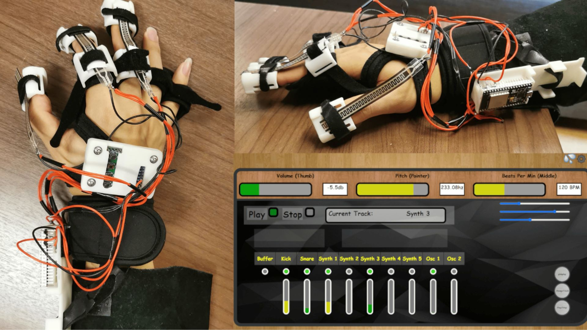
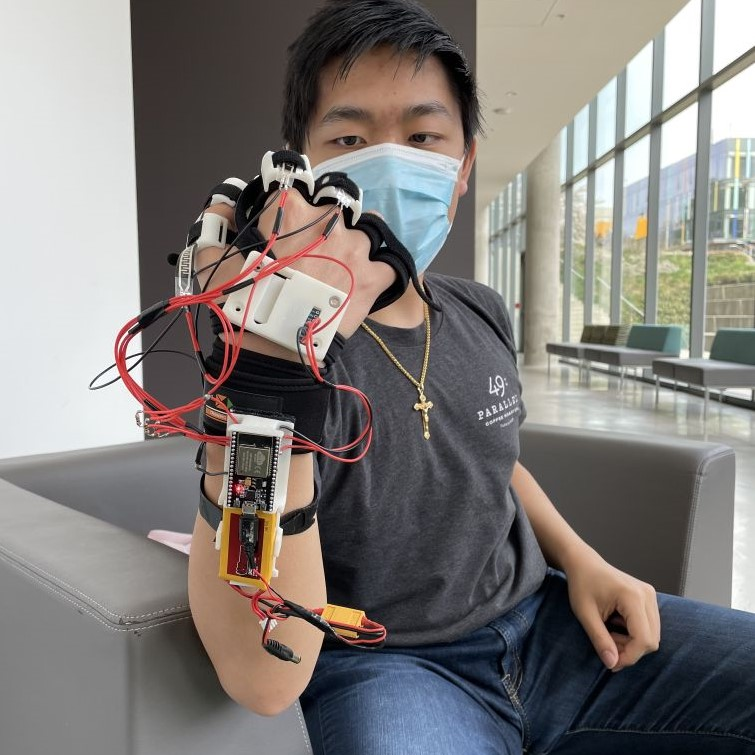
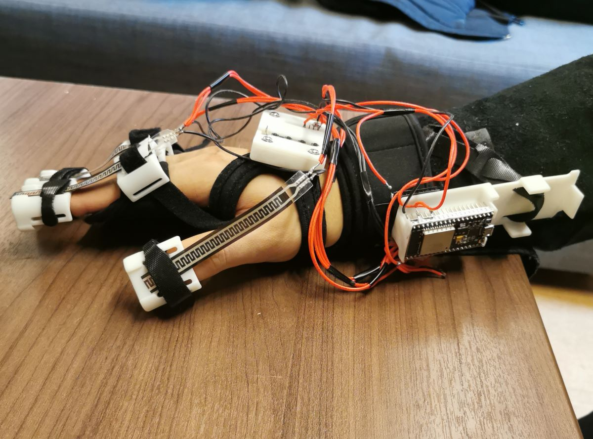
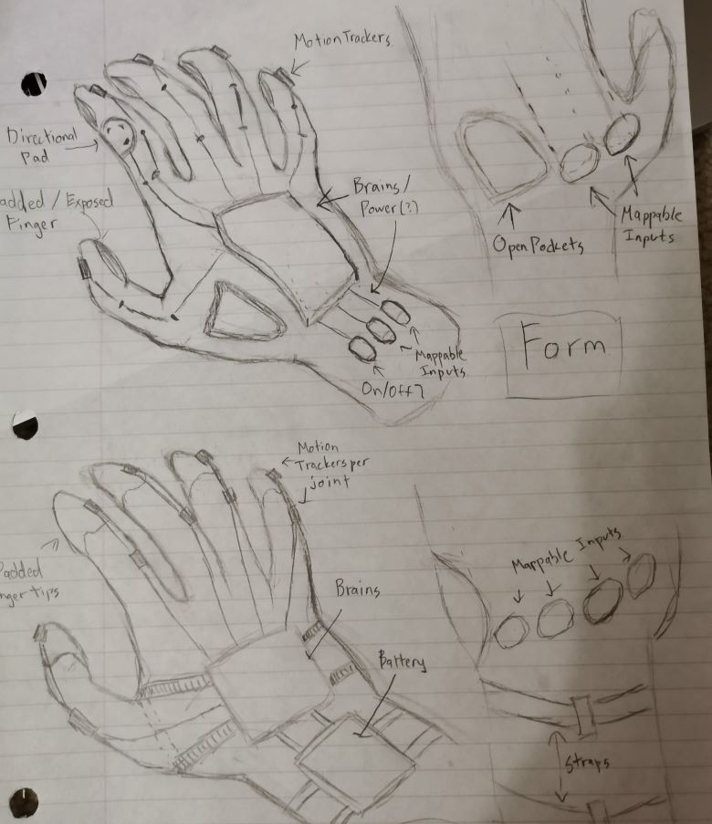
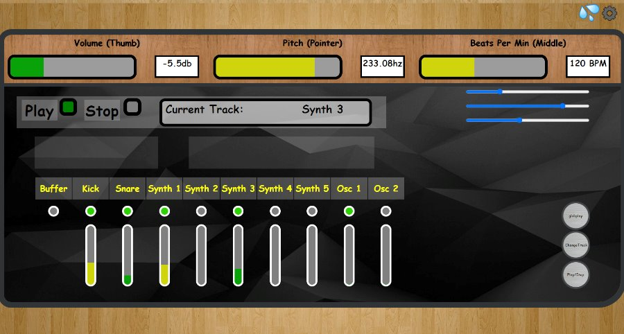
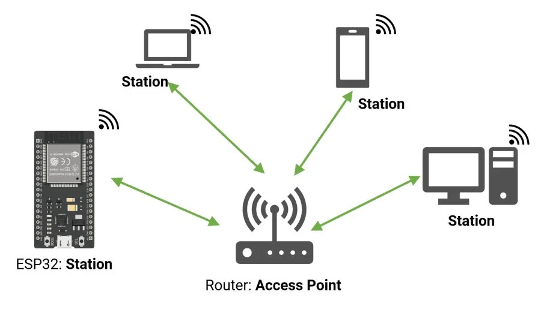
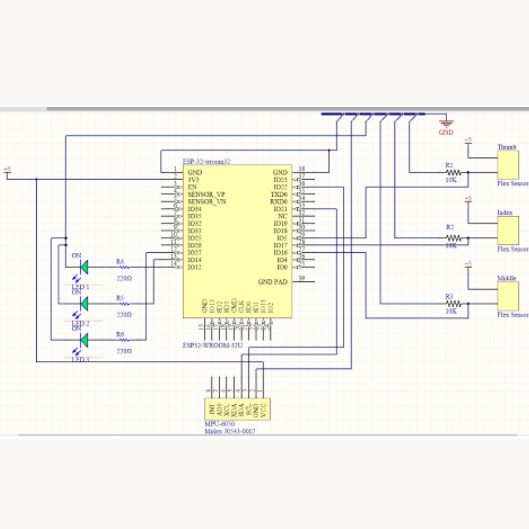
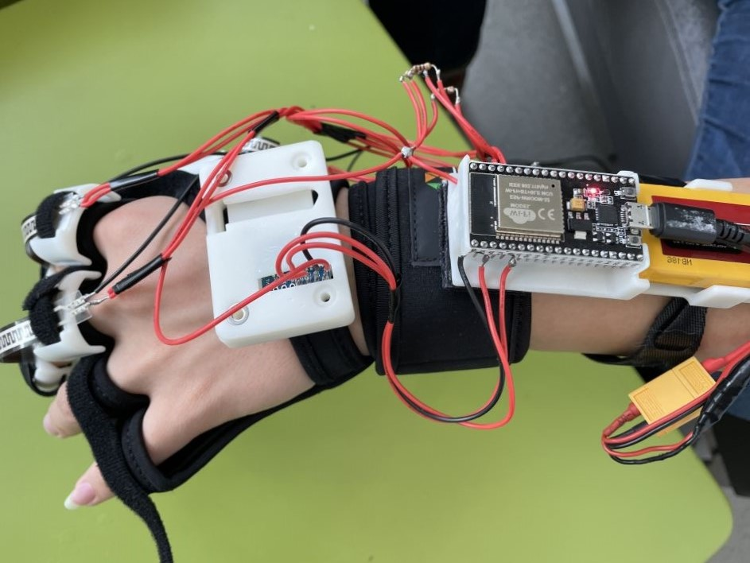

A unique spin on modern audio synthesizers, my 2021 capstone team aimed to design a wearable device which could translate hand gestures into music. Due to limitations on scope and time, the project evolved into a glove which could track user gesture and finger movements, and digitally recreate audio in a browser-based workspace.
- I was in charge of microcontroller integration, consisting of recording sensor data from the user and communicating it wirelessly to the interface.
- I also worked on the design of the user interface and interpreting the sensor data to map to the audio workstation.
Our Final Design Report

- 205g glove reduces fatigue on the hand
- 3x flexible sensors track finger movement for audio adjustment
- User interface provides up to 9 instruments to manipulate simultaneously
- Communication over Wi-Fi provides <50ms latency without extraneous cables

Ideation:
The initial scope was to emulate any instrument by performing the correct actions, though this was pivoted to a gesture-based MIDI device. We used an MPU6050 IMU to detect general movement, flexible resistors to track finger bending, and a 4-button keypad to calibrate the glove and provide additional functionality.

Designing the UI:
The UI underwent several iterations, with the final design making use of the Tone.js library to deliver 5 synthesizers, 2 oscillators, and a kick and snare drum. Each track could be activated and adjusted independently, with the bend sensors used to adjust the audio volume, pitch, and BPM. The keypad buttons were used for calibration, with 3 for mappable inputs.

Integrating with ESP32:
In order to communicate the sensor data, an ESP32 was chosen for its Bluetooth and WiFi capabilities. Initial plans to use Bluetooth BLE were eventually scrapped due to its shorter range and issues with latency. Instead, the UI was hosted on a web server after receiving an IP address from the user’s home network.

Sensor information was deconstructed into 3 types:
- Motion detected from the IMU classified as a gesture (Up, Down, Rotate)
- Finger bend information detected by flex sensors (Percentage from 0-100%)
- Binary information from push buttons (On / Off)

Despite data communication issues, we were successfully able to integrate a bulk of our framework making use of the flexible resistors and button inputs. We managed to alternate between tracks and modify the audio controls, creating a unique interactive experience.
Due to the pandemic, our cohort was unable to present to a live audience. Instead, each capstone team made a short video to showcase their work, which would then be viewed and voted upon by all capstone teams across 2nd, 3rd, and 4th years. Our team managed to place 1st of 12 teams for an innovative design, creative product showcase, and entertaining video.
Awards:
- IGEN Faculty Award (2nd Year) - 1st of 12 University student teams
